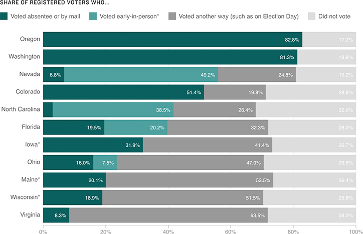

How Voters Cast Their Ballots In 2012
Selected states include battlegrounds (Florida, Iowa, Nevada, North Carolina, Ohio, Virginia and Wisconsin) and those that conduct their elections by mail (Oregon and Washington — Colorado became a vote-by-mail state in 2014). Maine is included because it typically has high voter turnout, of which a sizable share votes absentee.
Share of registered voters who...
